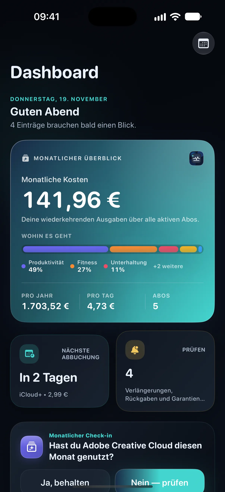
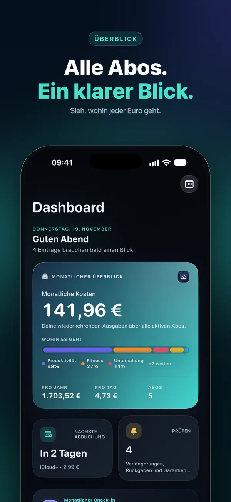
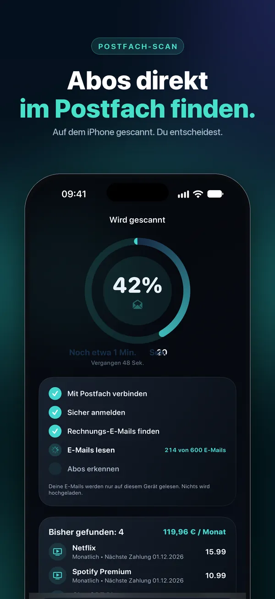
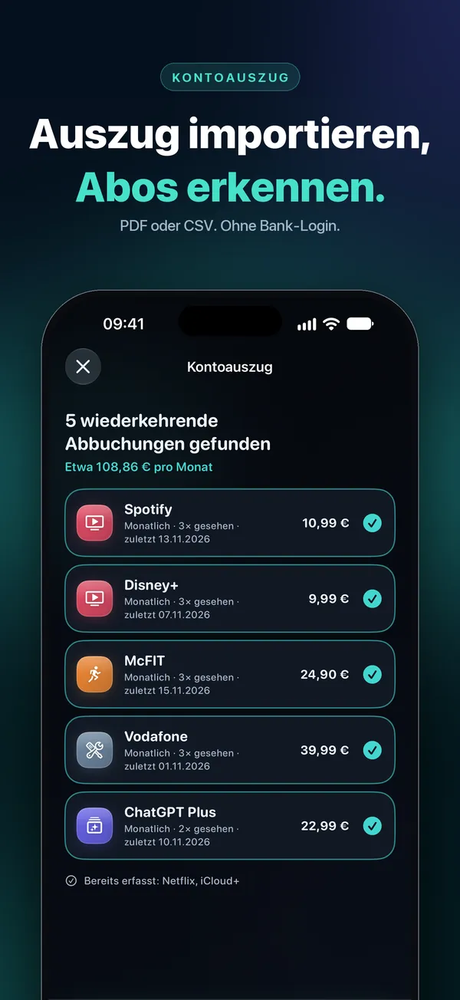
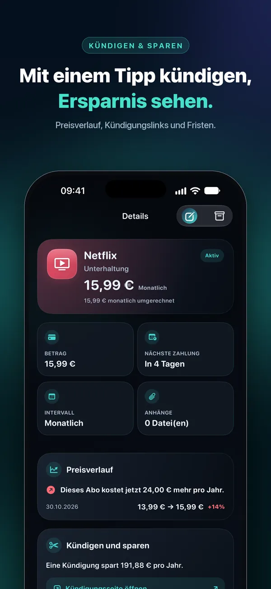
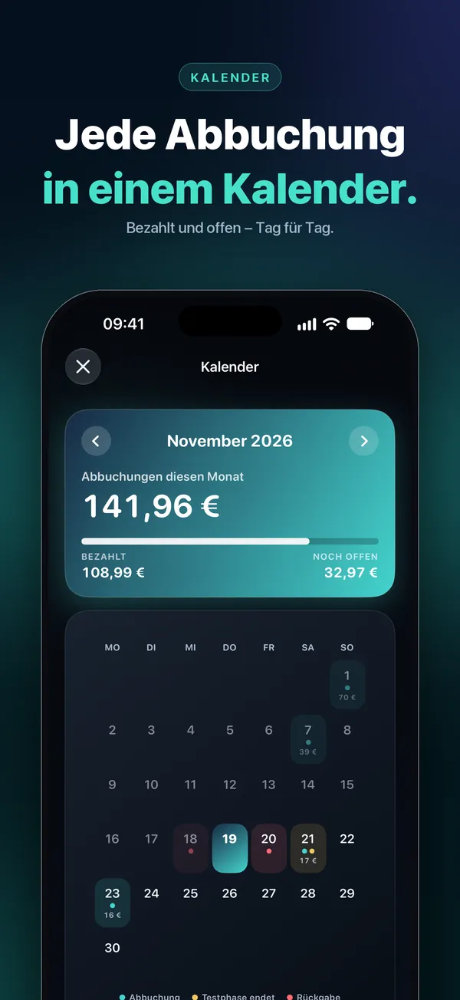
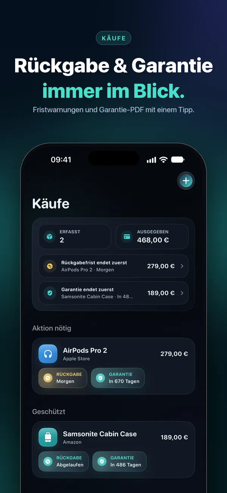

Postfach-Scan
Verbinde ein Postfach und PayGuards liest Rechnungs-E-Mails auf deinem iPhone. Aktive Abos werden erkannt, gekündigte aussortiert – du entscheidest, was hinzukommt.
ABOS · GARANTIEN · RÜCKGABEN
PayGuards findet deine Abos im Postfach und im Kontoauszug, warnt dich vor Preiserhöhungen und Kündigungsfristen und verwaltet Garantien und Rückgabefristen am selben Ort. Kein Bank-Login, nichts verlässt dein iPhone.
Kostenlos für bis zu 3 Abos und 3 Einkäufe. Pro ist ein einmaliger Kauf.

Verbinde ein Postfach und PayGuards liest Rechnungs-E-Mails auf deinem iPhone. Aktive Abos werden erkannt, gekündigte aussortiert – du entscheidest, was hinzukommt.
Wähle einen PDF- oder CSV-Auszug aus deiner Banking-App. Wiederkehrende Abbuchungen werden auf dem Gerät erkannt – ganz ohne Bank-Login.
Wird ein Abo teurer, weißt du es zuerst. Ein monatliches „Nutzt du das noch?“ zeigt, was du kündigen könntest.
Vergangene und kommende Abbuchungen Tag für Tag. Fristen für Verträge, Fitnessstudios und Handytarife werden vor dem letzten Kündigungstag gemeldet.
Belege zu jedem Kauf speichern, Rückgabe- und Garantiefristen verfolgen und bei Bedarf ein PDF für den Garantiefall erstellen.
Daten bleiben auf deinem Gerät, optional per iCloud-Sync über deine eigene private iCloud. Einmal zahlen – Pro für immer, kein Abo.






Direkter Kontakt für Fragen zum Produkt und Datenschutz.